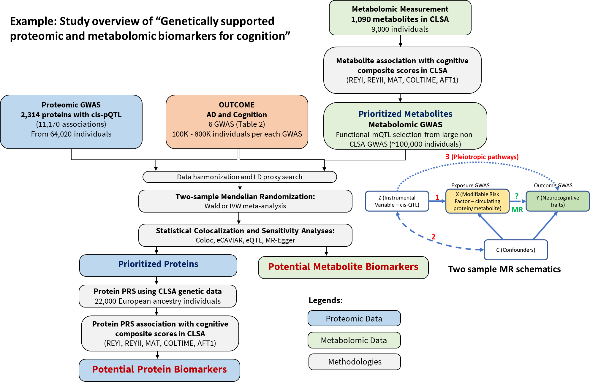
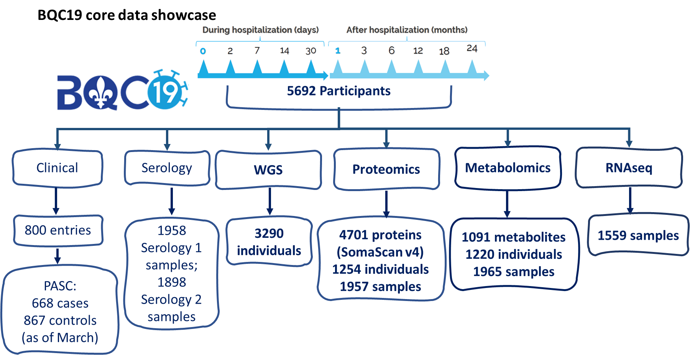
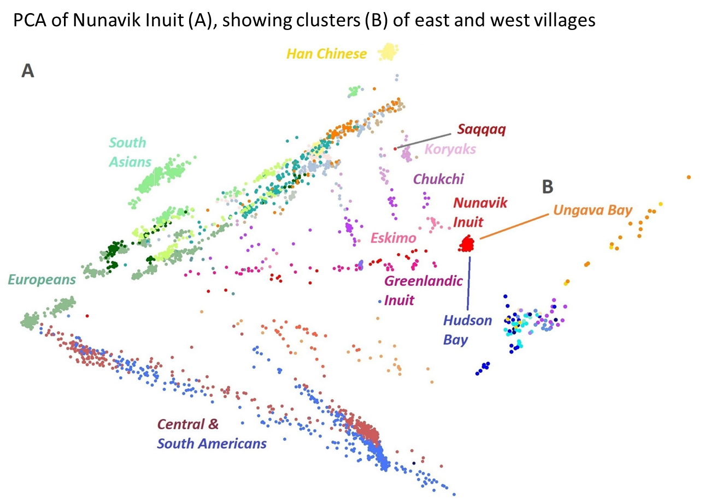
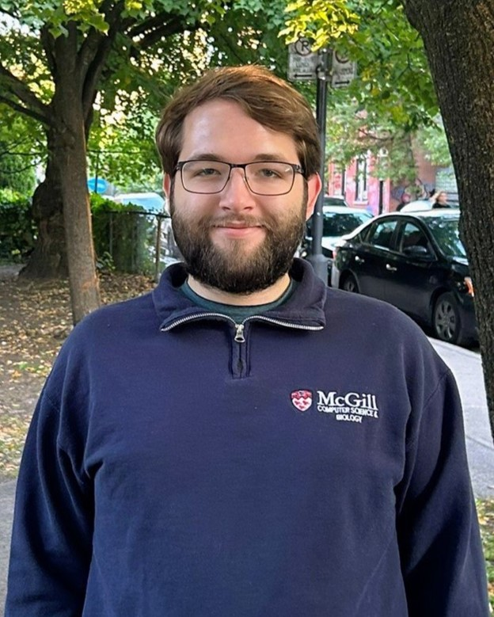

Zhou Lab
of
Population Genomics and Multi-Omics
Projects
Genetically supported multi-omics biomarkers for drug discovery
- We will identify causal circulating proteins and metabolites for diseases, using genetic epidemiological methods including Mendelian randomization (MR), statistical colocalization and PRS. 
- We will explore and develop novel statistical methods for MR and colocalization that incorporates the evidence of pQTL/sQTL/eQTL and mQTL/sQTL/eQTL.
Ancestry specific proteogenomic signatures of complex diseases and traits
- We will perform multi-ancestry proteomics GWAS, identify ancestry specific pQTLs, generate protein polygenic risk scores (PRS) and assess the role of rare coding variants for protein quantity
- We will develop frameworks combining population genetics and post-GWAS methods mapping evolutionary important regions → population specific variants → gene → protein → pathways → disease
Neurological manifestations of post-acute sequelae SARS-CoV-2 infection (PASC)
- A high percentage of people with COVID-19 reported PASC, among PASC symptoms, long term neurological manifestations are the most impactful, with the most severe effects in cognition, memory problems and Alzheimer’s disease.
- Supported by large genomics and multi-omics datasets from BQC19 (Banque québécoise de la COVID-19), CLSA (Canadian Longitudinal Study on Aging), UK Biobank, and collaborating with international COVID-19 cohorts, we will study the genetic determinants of neurological manifestations of PASC.
- Our recent COVID-19 publication in Nature Medicine. 
Genomic architecture of Arctic indigenous populations
- To increase the diversity of genomic research in underrepresented populations, we will generate whole genome sequencing data of an Arctic indigenous populations (Nunavik Inuit), following our previous publication. 
- We aim to characterize founder, admixture, introgression and natural selection events of Nunavik Inuit, some of which may contribute to certain disease risks, the findings will advance our knowledge of the population and better serve the community.
Our Team
|
Sirui Zhou, PhD
Assistant Professor -
Department of Human
Genetics
Member - Canada Excellence Research Chair in Genomic Medicine Investigator - Victor Phillip Dahdaleh Institute of Genomic Medicine Sirui Zhou is an Assistant Professor in the Departments of Human Genetics and Quantitative Life Science at McGill University. She received her M.Sc. from the Chinese Academy of Medical Sciences & Peking Union Medical College and Ph.D. from Université de Montréal. She was a CIHR postdoctoral fellow in Genetic Epidemiology at the Lady Davis Institute. Her research focus is using large scale genomics and multi-omics data to explore ancestry specific determinants of complex diseases. Her primary interests are immune related diseases and cerebrovascular disease.→ LinkedIn profile |
|
|
Susannah Selber-Hnati,
MSc
PhD Student - Department of Human Genetics
Susannah Selber-Hnatiw is a doctoral student in the department of Human Genetics and in the Kyoto-McGill International Joint Ph.D. Program. She obtained her M.Sc. from Concordia University in 2022, studying the production and modification of secondary metabolites in Aspergillus niger. She is passionate about rational drug design and her doctoral research will focus on identifying disease biomarkers that can be used for the development of novel therapeutics. Her current projects are to investigate the proteomic determinants for diseases in African ancestry populations, and the multi-omics markers for cognition decline. → LinkedIn profile |
|
|
Chen-Yang Su, MSc
PhD student - Quantitative Life Sciences program
Chen-Yang Su is a student from the Ph.D. program in Quantitative Life Sciences at McGill University. Previously, he completed his M.Sc. (Computer Science, 2022) and B.Sc. (joint majoring in Biology and Computer Science, 2020) both at McGill University. In the past, he has worked with proteomics and genomics in the context of COVID-19. His broader interests are in using multi-omics approaches for precision medicine and in guiding clinical decision-making. → LinkedIn profile → Personnal website |
|
|
Thomas Zheng, MSc
PhD student - Quantitative Life Sciences program
Thomas Zheng is a doctoral student from the Quantitative Life Sciences Program. He obtained his M.Sc. in Molecular Genetics from the University of Toronto. In the past, Thomas has worked on differential ancestry-specific protein responses in COVID-19 and the genetic consequences of excessive sperm donation. His current interests are to combine proteomic analysis with the population genetics of under-represented ancestral groups. → LinkedIn profile |
|
|  |
Calvin Surbey, BSc
PhD student - Quantitative Life Sciences Program
Calvin Surbey is a doctoral student jointly supervised by Dr. Luda Diatchenko in the Quantitative Life Sciences Program. He obtained his B.Sc. in a joint major in biology and computer science at McGill University. He is interested in applying multi-omics approaches to identify genes contributing to whether a person in pain will develop chronic pain or have their pain resolved, using covid and back pain as models. → LinkedIn profile |
|
Yefeng Yang, MSc
PhD student - Quantitative Life Sciences Program
(Rotation Fall 2024)
Yefeng Yang is a first-year Ph.D. student from the Quantitative Life Science program. He obtained his master’s degree in biostatistics at Emory University. He is interested in developing tools in multi-omics such as transformable PRS tool. → LinkedIn profile |
|
|
Juliano Malizia, BSc
MSc student - Department of Human Genetics
Juliano Malizia is a master’s student in the Department of Human Genetics jointly supervised by Dr. Claude Bhérer. Previously, he completed a B.Sc. (Ag. & Env.) in Environmental Biology at McGill where he discovered his passion for computational biology. His current research will explore the genetic structure of the Nunavik Inuit and analyze deleterious variants associated with intracranial aneurysms within this population. → LinkedIn profile |
|

|
Paul McKay, BSc
Research Assistant
Paul McKay is a research assistant jointly supervised by Vincent Mooser. He holds a B.Sc. in Biochemistry from McGill University and an M.H.Sc. in Medical Genomics from the University of Toronto. During his capstone practicum at the Lunenfeld-Tanenbaum Research Institute, he conducted genomic variant analysis on whole genome sequencing data from patients, contributing to a deeper understanding of genetics, immunity, COVID-19, and their interplay. His interests focus on advancing next-generation precision medicine therapeutics by unlocking the potential of the human genome. → LinkedIn profile |
Publications
Open Positions
-
PhD or MSc in Human Genetics or PhD in Quantitative Life Science
-
Postdoctoral fellow
We are looking for a motivated researcher with strong background in quantitative
analysis/computational
biology/biostatistics/bioinformatics.
- PhD in Human Genetics, Genetic Epidemiology, Population Genetics, Statistical Genetics or related field.
- Experience in bioinformatics and programming skills is required.
- Familiar with Linux environment, shell scripting and command-line software.
- Demonstrated proficiency in R is required.
- Demonstrated proficiency in Python is an asset.
- Familiar with cloud computing is an asset.
- Experience working with large scale human genomic and multi-omics dataset is an asset.
- Experience in population and evolutionary genetics is an asset.
Zhou Lab
Contact
Sirui Zhou, PhD
Canada Excellence Research Chair in Genomic Medicine
Assistant Professor, Departments of Human Genetics and Quantitative Life Science
Email: sirui.zhou@mcgill.ca
Phone: (514) 398-8364
740 Dr Penfield Ave, Room 7101
Montréal, Québec, Canada, H3A 1A4